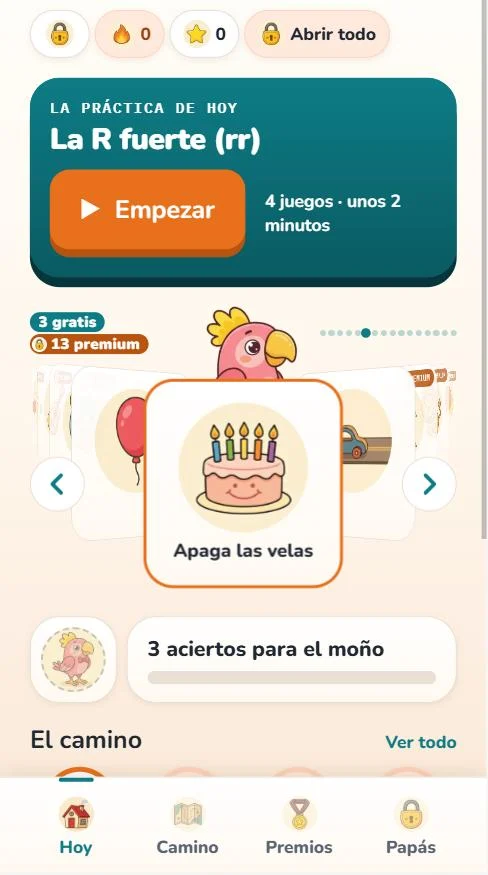
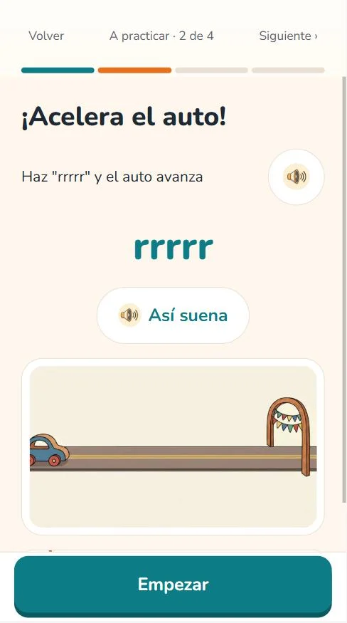
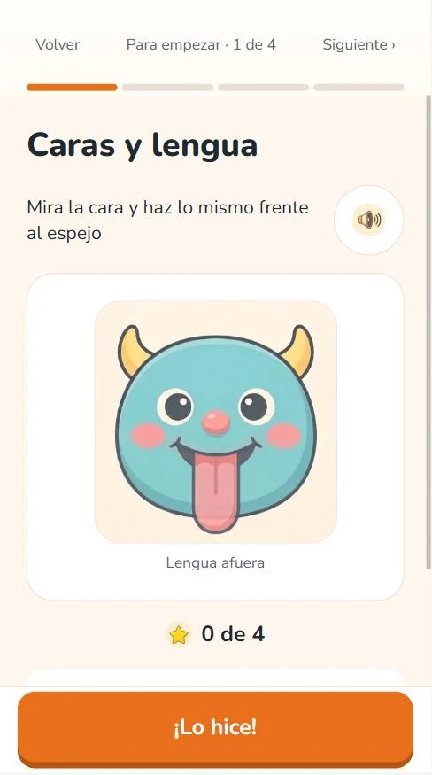
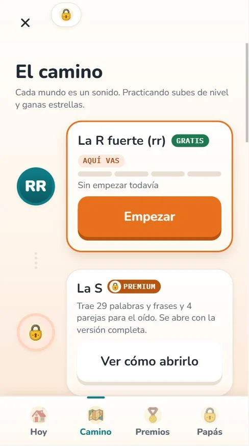
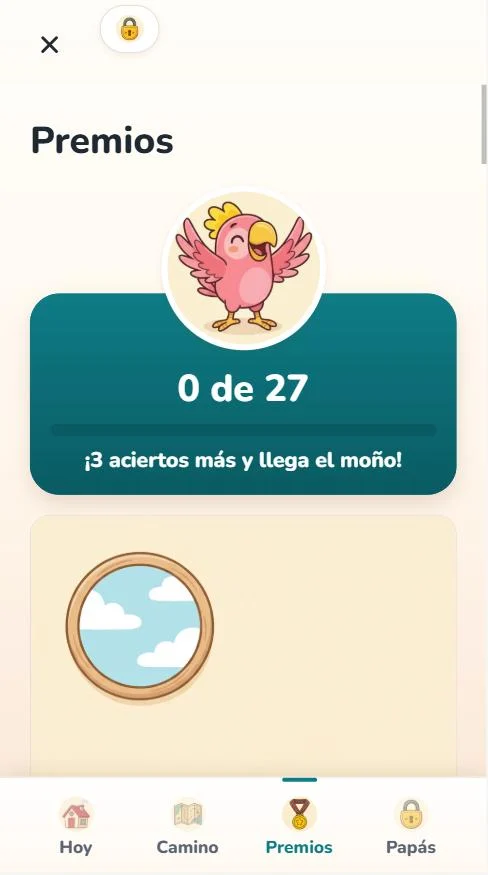
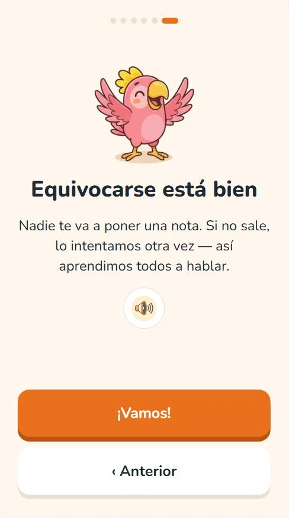
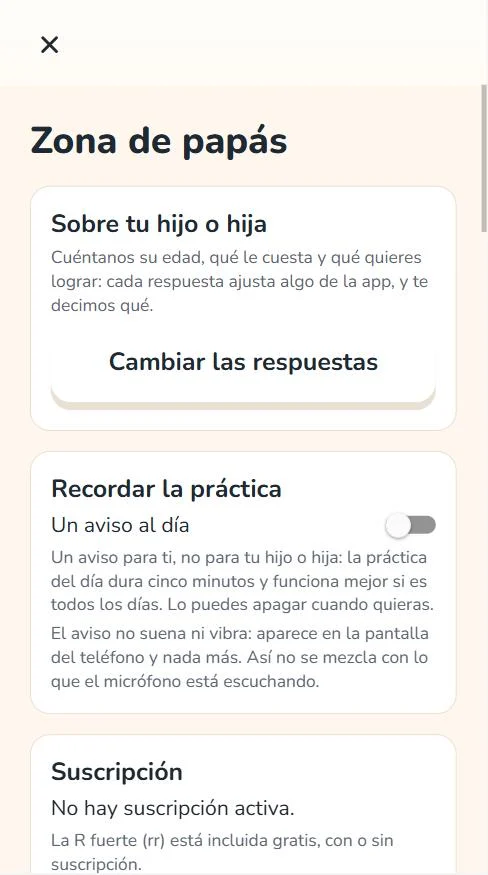
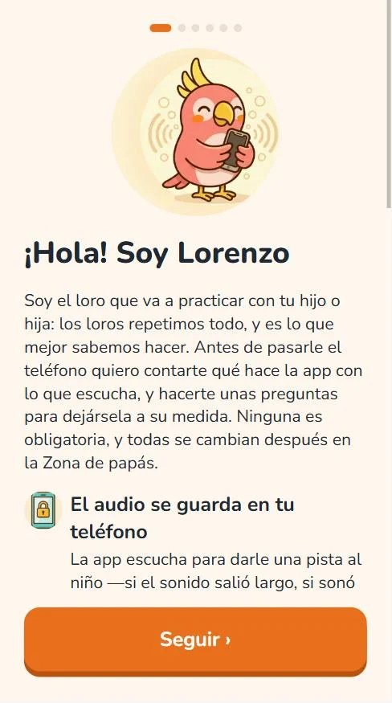

Por qué existe
Practicar quince minutos al día no falla por difícil. Falla por aburrido.
Cuando a un niño le cuesta la R, la S o las trabadas, lo que hay que hacer se sabe:
repetir. Un poco cada día, muchos días. El problema nunca fue el ejercicio, fue
conseguir que quiera hacerlo otra vez mañana.
Por eso Dilo Jugando no es una ficha de ejercicios con dibujos: es un juego que da
ganas de repetir. El micrófono responde en el momento —la barra se mueve mientras el
niño sopla o sostiene el sonido— y eso es justo lo que un cuaderno no puede dar.
-
Soplo y airela base de todo lo demásApagar las velasInflar el globo con sssssAcelerar con rrrr
-
Oído finodistinguir sonidos parecidos¿Cuál de las dos escuchaste?Marcar el ritmo, sílaba a sílaba
-
Caras y lengualas praxias de siempre, con espejo¿Qué es esto?Grabarse y escucharse
Por dentro
Así se ve.








Cómo está armado
El orden no es un invento nuestro.
Los sonidos aparecen en el orden habitual de adquisición de fonemas en español, y cada uno avanza por la jerarquía de siempre: sonido aislado, sílaba, palabra, frase. No se salta pasos ni se mezcla todo en la misma pantalla.
-
La R viene gratis y completa
Entera, no como demo ni como primer nivel de muestra. Es la que más se busca y es la que se puede probar de punta a punta antes de decidir nada.
-
El micrófono responde en el momento
La barra se mueve mientras el niño sopla o sostiene el sonido, ahí mismo en el teléfono. Ese ida y vuelta inmediato es lo que hace que quiera repetir.
-
No es un diagnóstico
La app acompaña la práctica y motiva: no evalúa, no corrige y no reemplaza a un fonoaudiólogo. Quien escucha y decide es la persona adulta. Si te preocupa cómo habla tu hijo, consulta a un fonoaudiólogo o al pediatra; dentro de la app hay una pantalla con señales de alarma por edad que siempre derivan a un profesional.
Para el papá o la mamá
La voz se queda en el teléfono.
La app funciona entera sin conexión. El audio se analiza ahí mismo y no se sube a ningún servidor, porque no hay servidor: no existe el código que lo enviaría.
-
Las grabaciones, solo si un adulto las activa
Quedan en el almacenamiento privado de la app y se borran cuando quieras. Desinstalar borra todo. Y se pueden compartir con la terapeuta en un toque, porque para eso existen.
-
Sin anuncios y sin compras del niño
Ninguno, en ninguna pantalla. Los premios se ganan jugando: no existe el atajo pagado. Lo que se paga es por familia, no por dispositivo, y se cancela desde Google Play sin llamar a nadie.
-
No pide cuenta, ni correo, ni fecha de nacimiento
Sin rastreadores y sin identificador de publicidad. Detrás de la puerta de adultos está cómo va, las grabaciones, un resumen para llevar a la consulta y la política de privacidad completa.
Lo único que hace falta para practicar es querer repetir mañana.
Todo lo demás —el orden de los sonidos, la constancia, el resumen para la consulta— viene solo cuando eso pasa.
Todavía no está en Google Play Dilo Jugando está en prueba cerrada. Cuando llegue a la tienda, el botón de descarga va acá.